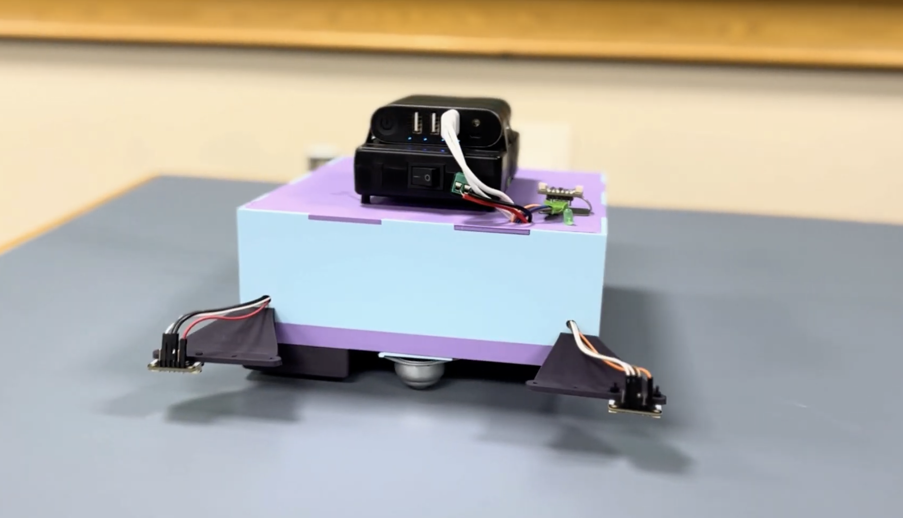
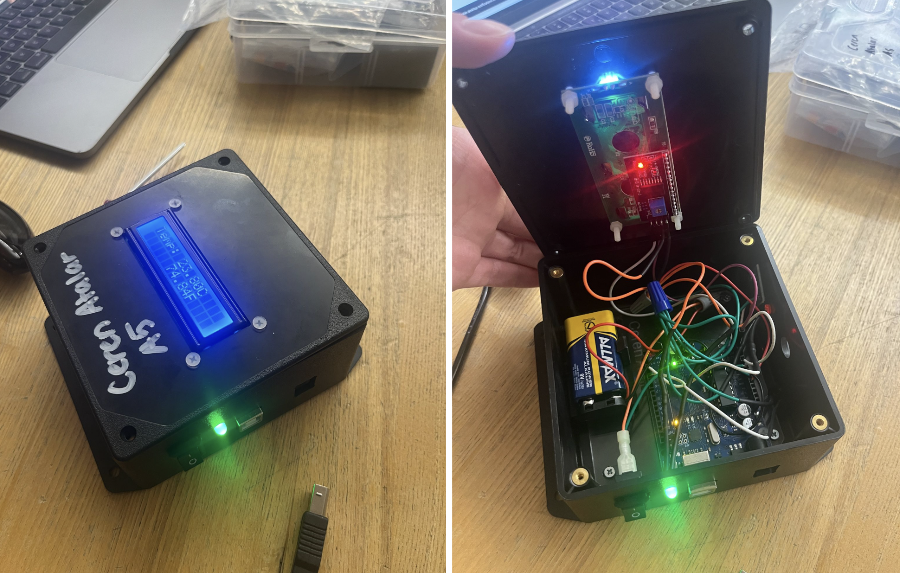
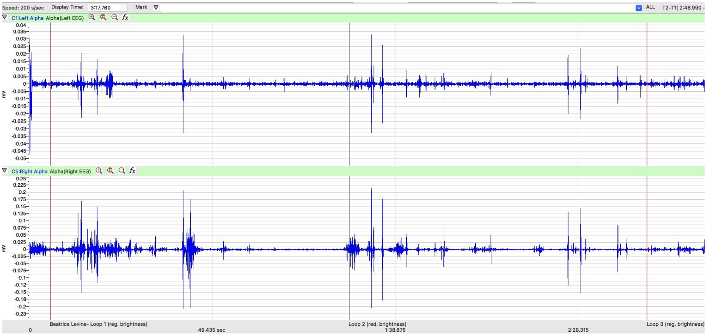

ROBOTICS · SENSORS · PROTOTYPING
Autonomous Desktop Cleaning Robot
A group engineering project focused on designing an autonomous robot capable of navigating and cleaning a desktop environment.
View project details →Engineering projects spanning biomedical engineering, robotics, prototyping, and technology innovation.

ROBOTICS · SENSORS · PROTOTYPING
A group engineering project focused on designing an autonomous robot capable of navigating and cleaning a desktop environment.
View project details →
STRUCTURAL ENGINEERING · MATLAB · ANALYSIS
A structural engineering project involving truss design, computational analysis, and experimental evaluation.
View project details →
EMBEDDED SYSTEMS · SENSORS · CAD
A sensor-based monitoring system combining electronics, programming, and enclosure design to measure room temperature.
View project details →
EEG · EXPERIMENTAL DESIGN · DATA ANALYSIS
A group laboratory project replicating a previously conducted EEG study to investigate the relationship between visual brightness and alpha-wave activity.
View project details →